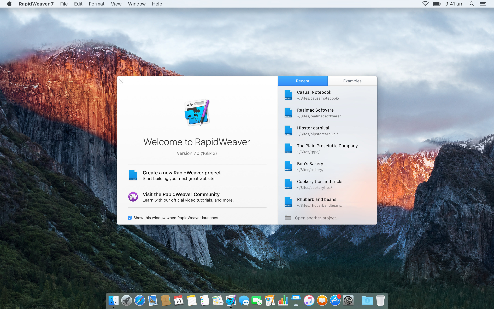
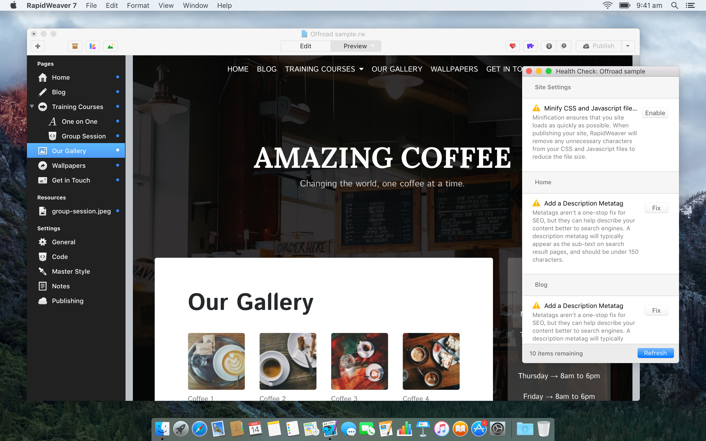
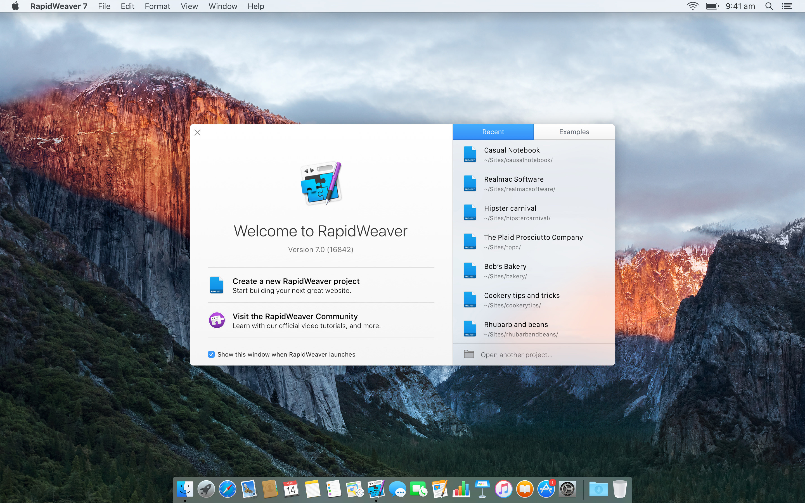
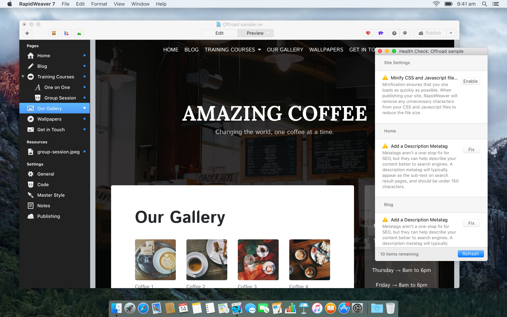

Adobe Muse Alternative for Mac
07 June 2018 @ 11:48
As you probably already know, Adobe is discontinuing development of Muse after just eight short years. Understandably users are not happy and are looking for a serious alternative.
Adobe will offer support to Muse users for around year, and while this gives users a little time to move their website projects over to a new system, it's far from ideal.
The good news is that there are some great alternatives out there on both Mac and PC. However, if you're a Mac user looking for an alternative to Adobe Muse, then RapidWeaver really should be your first choice.
In this article, I'm going to do a quick rundown on why RapidWeaver should be your go-to applications for future web design projects.

Right out of the box you can build a great looking responsive website without needing to write a line of code, you don't even need another app to upload it to your web server. RapidWeaver has it all built-in.
The real power in RapidWeaver lies in the fact that it has an incredibly vibrant and thriving third-party developer community behind it. For example, when you use RapidWeaver in combination with the Stacks plugin it gives you complete freedom to build whatever you or your client wants.

You can quickly build responsive websites, and because it separates the design from the content, it's easy to change the design whenever you like. RapidWeaver also has FTP and SFTP built-in, so you don't need another app, once you've built your site you can upload it all from within the app.
If you want to build an online store, no problem, there are plenty of options to do this too. Recently Ecwid released a plugin and a code snippet specifically for RapidWeaver. There's even a three-part video tutorial showing you how to get your store up and running.
Pretty much any website you want to build can be built with RapidWeaver. If you're unsure how to do something you can watch our extensive and regularly updated tutorials, or ask a question at our friendly forum where there are always fellow weavers willing to help out.
RapidWeaver costs just $89 and if you use this link to buy RapidWeaver, we'll automatically apply a 20% discount, meaning you can pick up the best web design tool on the Mac for around $70.
RapidWeaver is the longest running easy-to-use website builder on the Mac. It has been around for 14 years and is still actively developed. RapidWeaver also has one the best third-party developer communities you'll find.
Nothing comes close to RapidWeaver's power and flexibility.
You can download a demo of RapidWeaver that allows you to build a three-page website for free. Give it a try and if you have any questions about migrating from Muse be sure to drop by our friendly user forum or drop us an email.
Happy Weaving!
Adobe will offer support to Muse users for around year, and while this gives users a little time to move their website projects over to a new system, it's far from ideal.
The good news is that there are some great alternatives out there on both Mac and PC. However, if you're a Mac user looking for an alternative to Adobe Muse, then RapidWeaver really should be your first choice.
In this article, I'm going to do a quick rundown on why RapidWeaver should be your go-to applications for future web design projects.
Why RapidWeaver?
RapidWeaver is the best easy-to-use website building app on the Mac. The original version was released in 2004, and since then it's a had a steady succession of releases and has always been updated to support the latest release of Mac OS. Because RapidWeaver has been around for an astounding 14 years, it's very well supported and has a bright future ahead of it.
Right out of the box you can build a great looking responsive website without needing to write a line of code, you don't even need another app to upload it to your web server. RapidWeaver has it all built-in.
The real power in RapidWeaver lies in the fact that it has an incredibly vibrant and thriving third-party developer community behind it. For example, when you use RapidWeaver in combination with the Stacks plugin it gives you complete freedom to build whatever you or your client wants.
Can RapidWeaver do X?
We get asked this question a lot, and the answer is almost always "Yes", this is because of the fantastic third-party community and the richness of RapidWeaver itself.
You can quickly build responsive websites, and because it separates the design from the content, it's easy to change the design whenever you like. RapidWeaver also has FTP and SFTP built-in, so you don't need another app, once you've built your site you can upload it all from within the app.
If you want to build an online store, no problem, there are plenty of options to do this too. Recently Ecwid released a plugin and a code snippet specifically for RapidWeaver. There's even a three-part video tutorial showing you how to get your store up and running.
Pretty much any website you want to build can be built with RapidWeaver. If you're unsure how to do something you can watch our extensive and regularly updated tutorials, or ask a question at our friendly forum where there are always fellow weavers willing to help out.
Switch to RapidWeaver
Unlike Adobe Muse and a lot of other website builders, there's no on-going monthly subscription charge for RapidWeaver or limit on how many websites you can build. Once you've purchased RapidWeaver, you can use it for as long as you like and create as many websites as you want! It's that simple.RapidWeaver costs just $89 and if you use this link to buy RapidWeaver, we'll automatically apply a 20% discount, meaning you can pick up the best web design tool on the Mac for around $70.
RapidWeaver is the longest running easy-to-use website builder on the Mac. It has been around for 14 years and is still actively developed. RapidWeaver also has one the best third-party developer communities you'll find.
Nothing comes close to RapidWeaver's power and flexibility.
You can download a demo of RapidWeaver that allows you to build a three-page website for free. Give it a try and if you have any questions about migrating from Muse be sure to drop by our friendly user forum or drop us an email.
Happy Weaving!